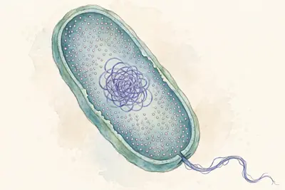

Sách Kết nối tri thức • Học theo lộ trình từng bài cho hiểu trước, rồi mới làm trắc nghiệm nhé!
📖 Phần 1 — Học tập
Học nối tiếp từng bài: mỗi bài là một chặng khép kín — học nội dung, xem sơ đồ tư duy, trả lời câu hỏi gợi nhớ, ôn flashcard của chính bài đó — xong bài này mới sang bài tiếp theo. Học hết 13 bài thì xuống Phần Tổng kết ở cuối trang để ôn lại toàn bộ, rồi mới sang Phần 2 làm trắc nghiệm. Dùng thanh chọn ngay dưới đây để học từng bài một (mặc định) hoặc xem tất cả một lượt — trang sẽ nhớ lựa chọn của em.
🎯 Học xong bài này em biết: thế nào là hoạt động nghiên cứu khoa học; phân biệt vật sống – vật không sống; kể được các lĩnh vực của Khoa học tự nhiên.
Khoa học tự nhiên nghiên cứu các sự vật, hiện tượng của thế giới tự nhiên và tìm ra quy luật của chúng.
Hoạt động nghiên cứu khoa học là hoạt động tìm tòi, khám phá ra cái mới bằng quan sát, thí nghiệm có phương pháp — ví dụ: nghiên cứu vaccine trong phòng thí nghiệm. Thả diều, cho mèo ăn, lấy đất trồng cây… không phải nghiên cứu khoa học.
Vật sống có các hoạt động sống: trao đổi chất, sinh trưởng, sinh sản, cảm ứng. Vật không sống (hòn đá, than củi, bàn ghế…) không có các hoạt động đó.
KHTN gồm các lĩnh vực: Vật lí học, Hóa học, Sinh học, Thiên văn học, Khoa học Trái Đất. Ví dụ: nước sôi là hiện tượng thuộc Vật lí học (sự chuyển thể).
⚡ Nhớ nhanh
Cây xanh và con mèo khác hòn đá ở điểm nào?
Chúng là vật sống: có trao đổi chất, sinh trưởng và sinh sản.
Các nhà khoa học đang làm thí nghiệm trong phòng lab — hình ảnh quen thuộc của hoạt động nghiên cứu khoa học. (Ảnh: Wikimedia Commons, CC0)
⚡ Nhớ nhanh
Nước sôi là hiện tượng thuộc lĩnh vực nào của KHTN?
Vật lí học — vì đó là sự chuyển thể của chất.
⭐ Điểm cần nhớ: Nghiên cứu vaccine = nghiên cứu khoa học • Vật sống có trao đổi chất, sinh trưởng, sinh sản • Nước sôi → lĩnh vực Vật lí học.
🧠 Sơ đồ tư duy — nhìn một lượt là nhớ cả bài:
Giới thiệu KHTN
Nghiên cứu khoa họcquan sát, thí nghiệm có phương pháp — ví dụ nghiên cứu vaccine
Vật sốngtrao đổi chất • sinh trưởng • sinh sản • cảm ứng
Vật không sốnghòn đá, than củi, bàn ghế…
Các lĩnh vựcVật lí • Hóa học • Sinh học • Thiên văn • KH Trái Đất
❓ Câu hỏi gợi nhớ — tự trả lời trong đầu trước, rồi mới bấm xem đáp án nhé:
❓ Tự kiểm tra: Hoạt động nào sau đây là hoạt động nghiên cứu khoa học: thả diều, cho mèo ăn, hay nghiên cứu vaccine phòng virus trong phòng thí nghiệm?
✅ Nghiên cứu vaccine trong phòng thí nghiệm — vì đó là hoạt động thí nghiệm, tìm tòi có phương pháp để khám phá ra cái mới.
❓ Tự kiểm tra: Than củi có phải là vật sống không? Vì sao?
✅ Không. Than củi không có các hoạt động sống như trao đổi chất, sinh trưởng hay sinh sản nên là vật không sống.
❓ Gợi nhớ: 🖼️ Nhìn hình các nhà khoa học trong phòng thí nghiệm: họ đang làm hoạt động gì? Hoạt động đó có phải là nghiên cứu khoa học không?
✅ Họ đang làm thí nghiệm, tìm tòi khám phá cái mới — đó chính là hoạt động nghiên cứu khoa học.
❓ Gợi nhớ: Kể tên 5 lĩnh vực của Khoa học tự nhiên.
✅ Vật lí học, Hóa học, Sinh học, Thiên văn học và Khoa học Trái Đất.
🃏 Flashcard của bài — bấm vào thẻ để lật mặt sau; nhớ rồi thì bấm ✔ Đã thuộc
🎯 Học xong bài này em biết: các quy tắc an toàn khi làm thí nghiệm và cách xử lí những tai nạn thường gặp.
Đọc kĩ hướng dẫn, làm đúng chỉ dẫn của giáo viên; đeo kính bảo hộ, găng tay khi thí nghiệm cần; không ăn uống, không nếm hay ngửi trực tiếp hóa chất.
Nhận biết các kí hiệu cảnh báo nguy hiểm trên nhãn hóa chất (độc, dễ cháy, ăn mòn…) để biết cách phòng tránh.
Sau khi làm thí nghiệm xong phải rửa sạch tay bằng xà phòng — vừa loại bỏ hóa chất (có thể ăn mòn da) vừa tránh vi khuẩn nguy hại.
Làm vỡ nhiệt kế thủy ngân: thủy ngân rất độc → đóng kín cửa phòng, đeo khẩu trang và găng tay, dùng chổi mềm quét gom cẩn thận và báo giáo viên. Tuyệt đối không dùng tay trần nhặt.
Hóa chất bị đổ/vỡ ra sàn: giữ bình tĩnh, báo giáo viên và trải giấy thấm lên dung dịch bị đổ để ngăn hóa chất lan rộng.
⚡ Nhớ nhanh
Làm xong thí nghiệm, việc đầu tiên em phải làm là gì?
Rửa sạch tay bằng xà phòng.
Kí hiệu cảnh báo "nguy hại cho sức khỏe" trong hệ thống GHS — loại kí hiệu em sẽ gặp trên nhãn các lọ hóa chất trong phòng thực hành. Gặp kí hiệu lạ, hãy đọc kĩ và hỏi giáo viên trước khi dùng. (Ảnh: Wikimedia Commons, Public domain)
⚡ Nhớ nhanh
Kí hiệu trong hình cảnh báo điều gì?
Chất nguy hại cho sức khỏe (hệ thống GHS) — phải đọc kĩ nhãn trước khi dùng.
⭐ Điểm cần nhớ: Xong thí nghiệm → rửa tay bằng xà phòng • Vỡ nhiệt kế thủy ngân → bảo hộ, gom cẩn thận, báo giáo viên • Hóa chất đổ → giấy thấm + báo giáo viên.
🧠 Sơ đồ tư duy — nhìn một lượt là nhớ cả bài:
An toàn phòng thực hành
Trước & trong giờđọc kĩ hướng dẫn • đeo kính, găng tay • không ăn uống, không nếm/ngửi hóa chất
Kí hiệu cảnh báođộc • dễ cháy • ăn mòn… trên nhãn hóa chất
Khi có sự cốvỡ nhiệt kế thủy ngân → bảo hộ, gom cẩn thận, báo GV • hóa chất đổ → giấy thấm
Sau giờ họcrửa sạch tay bằng xà phòng
❓ Câu hỏi gợi nhớ — tự trả lời trong đầu trước, rồi mới bấm xem đáp án nhé:
❓ Tự kiểm tra: Vì sao sau khi làm thí nghiệm xong cần rửa sạch tay bằng xà phòng?
✅ Để loại bỏ hóa chất có thể ăn mòn da tay và tránh vi khuẩn nguy hại còn bám trên tay.
❓ Tự kiểm tra: Không may làm vỡ ống hóa chất xuống sàn, em cần làm gì?
✅ Báo ngay cho giáo viên và trải giấy thấm lên dung dịch bị đổ để ngăn hóa chất lan ra xung quanh.
❓ Gợi nhớ: 🖼️ Nhìn kí hiệu cảnh báo trong hình: kí hiệu này cảnh báo điều gì? Gặp kí hiệu này trên lọ hóa chất, em phải làm gì?
✅ Kí hiệu cảnh báo chất nguy hại cho sức khỏe. Em phải đọc kĩ nhãn, làm đúng hướng dẫn và hỏi giáo viên trước khi dùng.
❓ Gợi nhớ: Nêu 2 việc tuyệt đối không được làm trong phòng thực hành.
✅ Không ăn uống trong phòng thực hành; không nếm hay ngửi trực tiếp hóa chất.
🃏 Flashcard của bài — bấm vào thẻ để lật mặt sau; nhớ rồi thì bấm ✔ Đã thuộc
🎯 Học xong bài này em biết: kính lúp phóng to được bao nhiêu lần, ý nghĩa số ghi trên vành kính và cách dùng, cách bảo quản kính lúp.
Kính lúp gồm một thấu kính lồi (miếng kính trong, phồng lên ở giữa — nhìn qua nó, vật sẽ to hơn) gắn trong khung có tay cầm, dùng để quan sát các vật nhỏ.
Số ghi trên vành kính như 3x, 5x… là số bội giác — cho biết khả năng phóng to ảnh của vật. Kính lúp thường phóng to ảnh khoảng 3 đến 20 lần.
Cách dùng đúng: đặt kính ở khoảng cách sao cho nhìn thấy vật rõ nét nhất, mắt nhìn qua kính; từ từ điều chỉnh khoảng cách giữa kính và vật đến khi ảnh rõ.
Bảo quản: lau kính bằng khăn mềm với nước sạch hoặc nước rửa kính chuyên dụng; cất nơi khô ráo, tránh làm rơi, vỡ hay trầy xước mặt kính.
⚡ Nhớ nhanh
Bộ phận chính của kính lúp là gì?
Một thấu kính lồi gắn trong khung có tay cầm.
Kính lúp cầm tay — thấu kính lồi giúp ta nhìn rõ những chi tiết nhỏ mà mắt thường khó thấy. (Ảnh: Wikimedia Commons, CC BY 2.5)
⚡ Nhớ nhanh
Kính lúp phóng to được khoảng bao nhiêu lần?
Khoảng 3 đến 20 lần.
⭐ Điểm cần nhớ: Số 3x, 5x = số bội giác (khả năng phóng to) • Kính lúp phóng to khoảng 3–20 lần • Dùng: điều chỉnh khoảng cách cho ảnh rõ nét.
🧠 Sơ đồ tư duy — nhìn một lượt là nhớ cả bài:
Kính lúp
Cấu tạothấu kính lồi + khung + tay cầm
Số bội giácsố ghi 3x, 5x… = khả năng phóng to • thường 3–20 lần
Cách dùngđiều chỉnh khoảng cách kính–vật cho ảnh rõ nét
Bảo quảnlau khăn mềm • cất nơi khô ráo
❓ Câu hỏi gợi nhớ — tự trả lời trong đầu trước, rồi mới bấm xem đáp án nhé:
❓ Tự kiểm tra: Trên vành một kính lúp ghi "5x". Số đó có ý nghĩa gì?
✅ Đó là số bội giác — cho biết kính có khả năng phóng to ảnh của vật lên 5 lần.
❓ Tự kiểm tra: Cách bảo quản kính lúp nào là đúng: chùi mặt kính bằng giấy nhám cho sạch, hay lau bằng khăn mềm và cất nơi khô ráo?
✅ Lau bằng khăn mềm (với nước sạch hoặc nước rửa kính chuyên dụng) và cất nơi khô ráo. Giấy nhám sẽ làm xước mặt kính.
❓ Gợi nhớ: 🖼️ Nhìn hình kính lúp: bộ phận chính giúp phóng to ảnh của vật là bộ phận nào?
✅ Thấu kính lồi ở giữa khung kính — nó làm ảnh của vật to lên để ta nhìn rõ chi tiết nhỏ.
❓ Gợi nhớ: Kính lúp thường phóng to ảnh của vật khoảng bao nhiêu lần?
✅ Khoảng 3 đến 20 lần.
🃏 Flashcard của bài — bấm vào thẻ để lật mặt sau; nhớ rồi thì bấm ✔ Đã thuộc
🎯 Học xong bài này em biết: kính hiển vi quang học phóng to được bao nhiêu lần và dùng để quan sát những vật như thế nào.
Những vật quá nhỏ (như tế bào) mắt thường và kính lúp đều không nhìn thấy — ta cần kính hiển vi quang học.
Kính hiển vi dùng hệ thống thấu kính gồm vật kính và thị kính; độ phóng đại của kính bằng độ phóng đại của vật kính nhân với thị kính.
Kính hiển vi quang học có thể phóng to ảnh của vật được quan sát khoảng 40 đến 3000 lần — lớn hơn kính lúp rất nhiều.
Nhờ kính hiển vi, con người quan sát được tế bào, vi khuẩn và cấu tạo bên trong của lá, máu… mở ra cả một thế giới vi mô.
⚡ Nhớ nhanh
Kính hiển vi quang học phóng to khoảng bao nhiêu lần?
Khoảng 40 đến 3000 lần.
Kính hiển vi quang học — công cụ giúp quan sát thế giới vi mô: tế bào, vi sinh vật… mà mắt thường không thấy được. (Ảnh: Wikimedia Commons, CC BY-SA 4.0)
⚡ Nhớ nhanh
Độ phóng đại của kính hiển vi được tính thế nào?
Độ phóng đại vật kính × độ phóng đại thị kính.
⭐ Điểm cần nhớ: Kính hiển vi quang học phóng to khoảng 40–3000 lần • Gồm vật kính + thị kính • So sánh: kính lúp chỉ 3–20 lần.
🧠 Sơ đồ tư duy — nhìn một lượt là nhớ cả bài:
Kính hiển vi quang học
Cấu tạovật kính + thị kính
Độ phóng đại40–3000 lần = phóng đại vật kính × thị kính
Dùng để quan sáttế bào, vi khuẩn — vật quá nhỏ
So với kính lúpkính lúp chỉ 3–20 lần
❓ Câu hỏi gợi nhớ — tự trả lời trong đầu trước, rồi mới bấm xem đáp án nhé:
❓ Tự kiểm tra: Kính hiển vi quang học có thể phóng to ảnh của vật được quan sát khoảng bao nhiêu lần?
✅ Khoảng từ 40 đến 3000 lần.
❓ Tự kiểm tra: Muốn quan sát tế bào lá hành, em dùng kính lúp hay kính hiển vi? Vì sao?
✅ Dùng kính hiển vi, vì tế bào rất nhỏ; kính lúp chỉ phóng to 3–20 lần, không đủ để nhìn thấy tế bào.
❓ Gợi nhớ: 🖼️ Nhìn hình kính hiển vi: hai bộ phận thấu kính chính của kính tên là gì?
✅ Vật kính (gần vật quan sát) và thị kính (gần mắt người nhìn).
❓ Gợi nhớ: Độ phóng đại của kính hiển vi được tính bằng cách nào?
✅ Bằng độ phóng đại của vật kính nhân với độ phóng đại của thị kính.
🃏 Flashcard của bài — bấm vào thẻ để lật mặt sau; nhớ rồi thì bấm ✔ Đã thuộc
🎯 Học xong bài này em biết: đơn vị đo độ dài hợp pháp, cách chọn thước và đọc kết quả đo đúng cách.
Đơn vị đo độ dài hợp pháp của nước ta là mét (m) — đơn vị chuẩn trong hệ SI. Các đơn vị khác: km, dm, cm, mm… (1 km = 1000 m; 1 m = 100 cm; 1 cm = 10 mm).
Mỗi thước có giới hạn đo (GHĐ) — độ dài lớn nhất thước đo được — và độ chia nhỏ nhất (ĐCNN) — khoảng cách giữa hai vạch chia liên tiếp.
Khi đo: chọn thước có GHĐ và ĐCNN phù hợp; đặt thước dọc theo chiều dài cần đo, vạch 0 trùng với một đầu của vật; mắt nhìn vuông góc với vạch chia; đọc và ghi kết quả theo ĐCNN.
Nhớ thêm: 1 mL = 1 cm³ — đổi qua lại giữa thể tích và dung tích.
⚡ Nhớ nhanh
Giá trị lớn nhất mà thước đo được gọi là gì?
Giới hạn đo (GHĐ) của thước.
Thước thép với các vạch chia li — hãy chú ý khoảng cách giữa hai vạch liên tiếp, đó chính là độ chia nhỏ nhất của thước. (Ảnh: Wikimedia Commons, CC BY-SA 4.0)
⚡ Nhớ nhanh
1 mL bằng bao nhiêu cm³?
1 mL = 1 cm³.
⭐ Điểm cần nhớ: Đơn vị hợp pháp = mét (m) • GHĐ = giá trị lớn nhất thước đo được • ĐCNN = khoảng cách 2 vạch liên tiếp • 1 mL = 1 cm³.
🧠 Sơ đồ tư duy — nhìn một lượt là nhớ cả bài:
Đo chiều dài
Đơn vịmét (m) — hợp pháp • km, dm, cm, mm
Hai con số của thướcGHĐ = lớn nhất đo được • ĐCNN = khoảng cách 2 vạch liên tiếp
Cách đo đúngvạch 0 trùng đầu vật • mắt nhìn vuông góc • đọc theo ĐCNN
Nhớ thêm1 mL = 1 cm³
❓ Câu hỏi gợi nhớ — tự trả lời trong đầu trước, rồi mới bấm xem đáp án nhé:
❓ Tự kiểm tra: Đơn vị nào là đơn vị đo độ dài hợp pháp của nước ta?
✅ Mét (m).
❓ Tự kiểm tra: Một thước có các vạch chia cách nhau 1 mm. ĐCNN của thước là bao nhiêu?
✅ ĐCNN = 1 mm — bằng khoảng cách giữa hai vạch chia liên tiếp trên thước.
❓ Gợi nhớ: 🖼️ Nhìn hình thước thép: khoảng cách giữa hai vạch chia liên tiếp trên thước cho biết đại lượng nào của thước?
✅ Độ chia nhỏ nhất (ĐCNN) của thước.
❓ Gợi nhớ: Đổi đơn vị: 1 m = ? cm; 1 cm = ? mm.
✅ 1 m = 100 cm; 1 cm = 10 mm.
🃏 Flashcard của bài — bấm vào thẻ để lật mặt sau; nhớ rồi thì bấm ✔ Đã thuộc
🎯 Học xong bài này em biết: cách đo khối lượng bằng cân đúng quy trình, cách chọn quả cân và đổi đơn vị khối lượng.
Đơn vị khối lượng là kilôgam (kg). Số ghi trên bao bì, ví dụ hộp sữa ghi 380 g, là khối lượng của sữa trong hộp (khối lượng tịnh).
Các bước đo khối lượng bằng cân: ước lượng khối lượng vật cần đo → chọn cân có GHĐ và ĐCNN phù hợp → hiệu chỉnh cân về vạch 0 → đặt vật nhẹ nhàng lên đĩa cân → đặt quả cân nhẹ nhàng → đọc kết quả. Không chọn cân "bất kì mình thích" và không đặt vật dứt khoát, mạnh tay.
Đổi đơn vị: 1 tấn = 1000 kg; 1 tạ = 100 kg; 1 yến = 10 kg; 1 lạng = 100 g = 0,1 kg. Ví dụ: 0,2 tạ = 20 kg (không phải 200 kg); 600 g = 0,6 kg.
Mẹo chọn quả cân: cộng dần các quả cân sao cho tổng đúng khối lượng cần cân — ví dụ cân 257,5 g dùng: 200 g + 50 g + 5 g + 2 g + 500 mg.
ĐCNN của cân đọc từ kết quả đo: cân được 15 634 g (lẻ đến 1 g) → ĐCNN của cân là 1 g.
⚡ Nhớ nhanh
Trước khi cân, phải làm gì với cân?
Hiệu chỉnh cân về vạch 0.
➕ Kiến thức bổ sung — biết thêm để làm được bài tập: Quy trình đo khối lượng bằng cân gồm đúng 6 bước theo thứ tự đã nêu ở trên: ước lượng → chọn cân → hiệu chỉnh → đặt vật → đặt quả cân → đọc kết quả. Khi đọc kết quả, em nhìn vào vạch chia mà đầu kim đang chỉ tới và ghi lại số đo tương ứng.
Cân đòn trong phòng thí nghiệm — khi cân, phải hiệu chỉnh về 0 trước và đặt vật thật nhẹ nhàng lên đĩa cân. (Ảnh: Wikimedia Commons, Public domain)
⚡ Nhớ nhanh
Số 380 g ghi trên hộp sữa cho biết điều gì?
Khối lượng của sữa trong hộp (khối lượng tịnh).
⭐ Điểm cần nhớ: Ước lượng → chọn cân phù hợp → hiệu chỉnh 0 → đặt nhẹ nhàng → đọc kết quả • 1 tấn = 1000 kg; 1 lạng = 0,1 kg.
🧠 Sơ đồ tư duy — nhìn một lượt là nhớ cả bài:
Đo khối lượng
Đơn vịkilôgam (kg) • tấn, tạ, yến, lạng, gam
Quy trình cânước lượng → chọn cân phù hợp → hiệu chỉnh 0 → đặt nhẹ nhàng → đọc
Đổi đơn vị1 tấn = 1000 kg • 1 tạ = 100 kg • 1 lạng = 100 g = 0,1 kg
Mẹo quả cân257,5 g = 200 + 50 + 5 + 2 + 0,5 g
❓ Câu hỏi gợi nhớ — tự trả lời trong đầu trước, rồi mới bấm xem đáp án nhé:
❓ Tự kiểm tra: Có 20 túi đường, mỗi túi 1 kg, cho thêm vào mỗi túi 2 lạng. Khối lượng của 20 túi là bao nhiêu?
✅ Mỗi túi nặng 1 kg + 0,2 kg = 1,2 kg. Vậy 20 túi nặng 1,2 × 20 = 24 kg.
❓ Tự kiểm tra: Hai phát biểu sau, phát biểu nào sai: (1) "Chọn cân nào mình thích cũng được"; (2) "Phải hiệu chỉnh cân về vạch 0 trước khi cân"?
✅ Phát biểu (1) sai — phải chọn cân có GHĐ và ĐCNN phù hợp với vật cần đo. Phát biểu (2) đúng.
❓ Gợi nhớ: 🖼️ Nhìn hình cân đòn: trước khi đặt vật lên cân, việc đầu tiên phải làm với cân là gì?
✅ Hiệu chỉnh cân về vạch 0 khi chưa có vật trên đĩa cân.
❓ Gợi nhớ: Vì sao nói 0,2 tạ = 20 kg mà không phải 200 kg?
✅ Vì 1 tạ = 100 kg, nên 0,2 tạ = 0,2 × 100 = 20 kg.
🃏 Flashcard của bài — bấm vào thẻ để lật mặt sau; nhớ rồi thì bấm ✔ Đã thuộc
🎯 Học xong bài này em biết: hai thang nhiệt độ Xen-xi-ớt (°C) và Fa-ren-hai (°F) và công thức chuyển đổi giữa chúng.
Nhiệt độ được đo bằng nhiệt kế. Thang Xen-xi-ớt (°C): nước đá đang tan ở 0 °C, nước đang sôi ở 100 °C.
Thang Fa-ren-hai (°F) dùng ở một số nước như Mỹ: nước đang sôi ở 212 °F.
Công thức chuyển đổi: T(°F) = T(°C) × 1,8 + 32. Ví dụ: 22 °C = 22 × 1,8 + 32 = 71,6 °F.
Lưu ý an toàn: nhiệt kế thủy ngân khi vỡ rất nguy hiểm — ôn lại cách xử lí ở Bài 2 nhé.
⚡ Nhớ nhanh
Nhiệt kế trong hình có mấy thang đo?
Hai thang: thang °C và thang °F.
Nhiệt kế treo tường có hai thang đo đặt cạnh nhau: bên trái là thang Xen-xi-ớt (°C), bên phải là thang Fa-ren-hai (°F). Cùng một lúc, nhiệt độ đọc theo hai thang cho hai con số khác nhau — khi đọc nhiệt kế, em phải chú ý mình đang đọc theo thang nào nhé! (Ảnh: JOBAER, Wikimedia Commons, giấy phép tự do)
⚡ Nhớ nhanh
Nước đang sôi ở bao nhiêu °C?
100 °C — tương ứng 212 °F.
⭐ Điểm cần nhớ: °F = °C × 1,8 + 32 • Nước sôi = 100 °C = 212 °F • Nước đá tan = 0 °C.
🧠 Sơ đồ tư duy — nhìn một lượt là nhớ cả bài:
Đo nhiệt độ
Dụng cụnhiệt kế
Thang Xen-xi-ớt °Cnước đá tan: 0 °C • nước sôi: 100 °C
Thang Fa-ren-hai °Fnước sôi: 212 °F
Công thức đổi°F = °C × 1,8 + 32
❓ Câu hỏi gợi nhớ — tự trả lời trong đầu trước, rồi mới bấm xem đáp án nhé:
❓ Tự kiểm tra: Đổi 22 °C ra độ F.
✅ 22 × 1,8 + 32 = 39,6 + 32 = 71,6 °F.
❓ Tự kiểm tra: Trong thang Fa-ren-hai, nhiệt độ của nước đang sôi là bao nhiêu?
✅ 212 °F.
❓ Gợi nhớ: 🖼️ Nhìn hình nhiệt kế treo tường: hai thang đo trên nhiệt kế là hai thang nào? Nước đang sôi ở 100 °C thì đọc theo thang Fa-ren-hai được bao nhiêu?
✅ Thang Xen-xi-ớt (°C) ở bên trái và thang Fa-ren-hai (°F) ở bên phải. 100 °C = 212 °F — đó là nhiệt độ của nước đang sôi.
❓ Gợi nhớ: Đổi 0 °C sang độ F.
✅ 0 × 1,8 + 32 = 32 °F.
🃏 Flashcard của bài — bấm vào thẻ để lật mặt sau; nhớ rồi thì bấm ✔ Đã thuộc
🎯 Học xong bài này em biết: ba thể của chất, tên gọi các sự chuyển thể và phân biệt được bay hơi với sôi.
Chất có 3 thể: rắn, lỏng, khí. Thể rắn có hình dạng và thể tích xác định; thể lỏng có thể tích xác định nhưng hình dạng theo vật chứa; thể khí không có hình dạng và thể tích xác định, lan tỏa theo mọi hướng trong không gian (vì vậy ta ngửi thấy mùi hoa hồng từ xa).
Các sự chuyển thể: nóng chảy (rắn → lỏng), đông đặc (lỏng → rắn), bay hơi (lỏng → khí), ngưng tụ (khí → lỏng), sôi (lỏng → khí trong lòng chất lỏng).
Hơi nước ngưng tụ trên cao tạo thành mây; ngưng tụ gần mặt đất tạo thành sương.
Phân biệt quan trọng: sôi xảy ra ở một nhiệt độ xác định (nhiệt độ sôi); còn bay hơi xảy ra ở mọi nhiệt độ, chỉ trên bề mặt chất lỏng, nhanh hơn khi trời nắng nóng và có gió — nghề làm muối thuận lợi vào những ngày nắng nóng vì nước biển bay hơi nhanh.
⚡ Nhớ nhanh
Mây trên trời được tạo thành nhờ hiện tượng gì?
Hơi nước ngưng tụ trên cao.
➕ Kiến thức bổ sung — biết thêm để làm được bài tập: Sự bay hơi diễn ra rất lặng lẽ trên mặt thoáng: mắt thường không nhìn thấy được quá trình nước biến thành hơi — ta chỉ nhận ra khi thấy mực chất lỏng vơi dần đi. Đó cũng là một đặc điểm nữa để nhận biết sự bay hơi.
Đá (thể rắn) đang tan thành nước (thể lỏng) — hiện tượng nóng chảy em gặp hằng ngày. (Ảnh: Wikimedia Commons, CC BY-SA 2.0)
⚡ Nhớ nhanh
Viên đá tan thành nước gọi là sự gì?
Sự nóng chảy — chuyển từ thể rắn sang thể lỏng.
⭐ Điểm cần nhớ: Ngưng tụ → tạo mây • Sôi: nhiệt độ xác định • Bay hơi: mọi nhiệt độ, trên bề mặt thoáng • Khí lan tỏa mọi hướng.
🧠 Sơ đồ tư duy — nhìn một lượt là nhớ cả bài:
Các thể & sự chuyển thể
Ba thể của chấtrắn: hình dạng + thể tích xác định • lỏng: thể tích xác định • khí: lan tỏa mọi hướng
Các sự chuyển thểnóng chảy • đông đặc • bay hơi • ngưng tụ • sôi
Trong tự nhiênhơi nước ngưng tụ → mây, sương
Sôi ≠ Bay hơisôi: ở nhiệt độ xác định • bay hơi: mọi nhiệt độ, trên bề mặt
❓ Câu hỏi gợi nhớ — tự trả lời trong đầu trước, rồi mới bấm xem đáp án nhé:
❓ Tự kiểm tra: Hiện tượng tự nhiên nào sau đây do hơi nước ngưng tụ: tạo thành mây, hay nước đá tan thành nước?
✅ Tạo thành mây — hơi nước trong không khí ngưng tụ thành những giọt nước li ti. Nước đá tan là nóng chảy.
❓ Tự kiểm tra: "Bay hơi xảy ra ở một nhiệt độ xác định" — phát biểu này đúng hay sai? Vì sao?
✅ Sai. Bay hơi xảy ra ở mọi nhiệt độ; chỉ có sự sôi mới xảy ra ở một nhiệt độ xác định (nhiệt độ sôi).
❓ Gợi nhớ: 🖼️ Nhìn hình viên đá đang tan: đây là sự chuyển thể nào? Chất chuyển từ thể gì sang thể gì?
✅ Sự nóng chảy — chất chuyển từ thể rắn sang thể lỏng.
❓ Gợi nhớ: Vì sao quần áo phơi vào ngày nắng nóng và có gió lại khô nhanh hơn?
✅ Vì nước bay hơi nhanh hơn khi nhiệt độ cao và có gió thổi qua bề mặt thoáng.
❓ Gợi nhớ: Sương mù buổi sáng sớm được tạo thành do hiện tượng gì?
✅ Hơi nước trong không khí ngưng tụ gần mặt đất thành những giọt nước li ti.
🃏 Flashcard của bài — bấm vào thẻ để lật mặt sau; nhớ rồi thì bấm ✔ Đã thuộc
Bài 10. Sự đa dạng của chất — Tính chất của chất và vật liệu
🎯 Học xong bài này em biết: phân biệt tính chất vật lí và tính chất hóa học của chất; thế nào là vật liệu, nguyên liệu; ý nghĩa mô hình 3R.
Tính chất vật lí: màu, mùi, vị, tính dẫn điện, dẫn nhiệt, nhiệt độ sôi/nóng chảy… quan sát được mà chất không biến đổi thành chất khác. Ví dụ: kim loại dẫn điện tốt.
Tính chất hóa học: khả năng biến đổi thành chất khác — ví dụ đun đường đến khi cháy đen (tạo ra chất mới), sắt bị gỉ.
Vật liệu là một chất hoặc hỗn hợp được dùng làm nguyên liệu đầu vào để sản xuất sản phẩm. Nguyên liệu ví dụ: đất sét làm gạch ngói, gỗ làm giấy. Chú ý: xe đạp là sản phẩm/vật thể, không phải vật liệu.
Gang và thép đều chế biến từ quặng sắt. Gang cứng nhưng giòn hơn thép nên ít dùng trong xây dựng. Khai thác quặng cần có kế hoạch, tránh khai thác thủ công kém hiệu quả và lãng phí tài nguyên.
Mô hình 3R bảo vệ môi trường: Reduce (giảm thiểu) – Reuse (tái sử dụng) – Recycle (tái chế).
⚡ Nhớ nhanh
Đun đường đến cháy đen cho thấy tính chất gì của chất?
Tính chất hóa học — vì có chất mới được tạo thành.
➕ Kiến thức bổ sung — biết thêm để làm được bài tập: Khai thác quặng (như quặng sắt) giúp con người có nguyên liệu để chế biến thành những sản phẩm có giá trị như gang, thép. Khi khai thác, cần làm tiết kiệm, có kế hoạch và tránh gây ô nhiễm môi trường đất, nước và không khí xung quanh.
Biểu tượng tái chế quen thuộc — nhắc ta thực hành 3R: giảm thiểu rác thải, tái sử dụng và tái chế vật liệu để bảo vệ môi trường. (Ảnh: Wikimedia Commons, Public domain)
⚡ Nhớ nhanh
Biểu tượng trong hình có ý nghĩa gì?
Tái chế (Recycle) — một trong ba phần của mô hình 3R.
⭐ Điểm cần nhớ: Tạo chất mới = tính chất hóa học (đường cháy đen) • Kim loại dẫn điện tốt • 3R = Giảm thiểu – Tái sử dụng – Tái chế • Gang, thép ← quặng sắt.
🧠 Sơ đồ tư duy — nhìn một lượt là nhớ cả bài:
Chất & vật liệu
Tính chất vật límàu, mùi, dẫn điện, dẫn nhiệt… — không tạo chất mới
Tính chất hóa họcbiến đổi thành chất khác — đường cháy đen, sắt gỉ
Vật liệu & nguyên liệuđất sét → gạch ngói • gỗ → giấy • gang, thép ← quặng sắt (gang giòn hơn thép)
Mô hình 3RReduce giảm thiểu • Reuse tái sử dụng • Recycle tái chế
❓ Câu hỏi gợi nhớ — tự trả lời trong đầu trước, rồi mới bấm xem đáp án nhé:
❓ Tự kiểm tra: Quá trình nào thể hiện tính chất hóa học: nước bay hơi, hay đun nóng đường đến khi xuất hiện chất màu đen?
✅ Đun nóng đường đến khi cháy đen — vì có chất mới được tạo thành. Bay hơi chỉ là chuyển thể, tính chất vật lí.
🎯 Học xong bài này em biết: thành phần của không khí, vai trò của oxygen và cách dùng gas, xử lí cháy xăng an toàn.
Không khí là hỗn hợp khí: nitrogen chiếm khoảng 78%, oxygen chiếm khoảng 21% thể tích, còn lại là các khí khác (carbon dioxide, hơi nước…).
Oxygen rất cần cho sự sống (hô hấp) và duy trì sự cháy. Trong y tế, oxygen được nén trong các bình thép để hỗ trợ bệnh nhân thở.
Dùng gas tiết kiệm: điều chỉnh ngọn lửa phù hợp với nhu cầu và kích thước nồi, không để lửa cháy lãng phí quá to.
Can xăng bốc cháy: không dùng nước (xăng nhẹ hơn nước, sẽ loang ra và cháy lan) — cách phù hợp là dùng cát đổ trùm lên để cách li oxygen, hoặc dùng bình chữa cháy.
⚡ Nhớ nhanh
Oxygen chiếm khoảng bao nhiêu phần trăm không khí?
Khoảng 21%.
Các bình oxygen y tế tại bệnh viện — oxygen chiếm 21% không khí và là khí duy trì sự sống, được nén vào bình để cấp cho bệnh nhân khi cần. (Ảnh: Wikimedia Commons, Public domain)
⚡ Nhớ nhanh
Can xăng bốc cháy thì dập lửa bằng gì?
Đổ cát trùm lên (hoặc dùng bình chữa cháy) — tuyệt đối không dùng nước.
⭐ Điểm cần nhớ: Không khí: nitrogen ≈ 78%, oxygen ≈ 21% • Cháy xăng → cát trùm lên, tuyệt đối không dùng nước.
🧠 Sơ đồ tư duy — nhìn một lượt là nhớ cả bài:
Oxygen & không khí
Thành phần không khínitrogen ≈ 78% • oxygen ≈ 21% • khí khác ≈ 1%
Vai trò của oxygenhô hấp • duy trì sự cháy • y tế (bình oxygen)
Dùng gas tiết kiệmchỉnh ngọn lửa vừa với nồi và nhu cầu
Cháy xăng dầudùng cát trùm lên • KHÔNG dùng nước
❓ Câu hỏi gợi nhớ — tự trả lời trong đầu trước, rồi mới bấm xem đáp án nhé:
❓ Tự kiểm tra: Trong không khí, oxygen và nitrogen chiếm khoảng bao nhiêu phần trăm thể tích?
✅ Oxygen khoảng 21%, nitrogen khoảng 78%.
❓ Tự kiểm tra: Can xăng bốc cháy, vì sao không nên dùng nước để dập?
✅ Vì xăng nhẹ hơn nước và không tan trong nước, đổ nước sẽ làm xăng loang ra, cháy lan rộng hơn. Cách đúng: dùng cát đổ trùm lên để cách li oxygen.
❓ Gợi nhớ: 🖼️ Nhìn hình các bình thép trong bệnh viện: trong bình chứa khí gì và dùng để làm gì?
✅ Khí oxygen, dùng để hỗ trợ bệnh nhân hô hấp khi cần.
❓ Gợi nhớ: Nêu một cách dùng bếp gas tiết kiệm mà em học được trong bài.
✅ Điều chỉnh ngọn lửa vừa phải, phù hợp với kích thước nồi và nhu cầu đun nấu, không để lửa cháy lãng phí.
🃏 Flashcard của bài — bấm vào thẻ để lật mặt sau; nhớ rồi thì bấm ✔ Đã thuộc
✅ Xong Bài 11 rồi! Ôn thẻ xong thì đi tiếp 👉 Bài 12: Tế bào
Bài 12. Tế bào — đơn vị của sự sống và các cấp độ tổ chức cơ thể
🎯 Học xong bài này em biết: tế bào là đơn vị cấu tạo của mọi sinh vật; phân biệt sinh vật đơn bào – đa bào; các cấp độ tổ chức của cơ thể.
Mọi sinh vật đều được cấu tạo từ tế bào — tế bào là đơn vị cơ bản của sự sống. Hầu hết tế bào rất nhỏ, phải dùng kính hiển vi mới quan sát được (ôn lại Bài 4).
Nhân tế bào là trung tâm điều khiển mọi hoạt động của tế bào. Lưu ý dễ nhầm: tế bào nhân thực có nhân hoàn chỉnh; "vùng nhân" là đặc điểm của tế bào nhân sơ (loại tế bào đơn giản, chưa có nhân hoàn chỉnh), không có ở tế bào nhân thực.
Cơ thể lớn lên nhờ tế bào sinh trưởng và phân chia (sinh sản) — ví dụ quả táo trên cây to dần sau nhiều ngày. Tế bào cũ chết đi cũng được thay thế liên tục: nếu dạ dày không thay thế tế bào, thành dạ dày sẽ bị acid ăn mòn gây viêm loét.
Sinh vật đơn bào: cơ thể chỉ gồm một tế bào — ví dụ tảo lục, vi khuẩn lam. Sinh vật đa bào gồm nhiều tế bào: cây thông, con bướm…
Các cấp độ tổ chức: tế bào → mô → cơ quan → hệ cơ quan → cơ thể. Ví dụ dạ dày là một cơ quan, được cấu tạo từ tế bào và mô.
Ở thực vật có hai hệ cơ quan: hệ chồi (thân, lá, hoa, quả) và hệ rễ.
⚡ Nhớ nhanh
Đơn vị cấu tạo nên mọi sinh vật là gì?
Tế bào.
➕ Kiến thức bổ sung — biết thêm để làm được bài tập: Tế bào không phải lúc nào cũng có cùng một hình dạng. Tùy từng loại, tế bào có thể có hình cầu, hình đĩa, hình sợi dài hay hình đa giác… Vì vậy, nói “mọi tế bào đều có hình đa giác” là sai.
Tế bào biểu bì hành nhìn qua kính hiển vi quang học — từng "ô" nhỏ xếp khít nhau chính là từng tế bào, đơn vị cấu tạo nên mọi sinh vật. (Ảnh: Wikimedia Commons, CC BY 2.0)
⚡ Nhớ nhanh

Bộ phận nào là trung tâm điều khiển của tế bào?
Nhân tế bào.
⭐ Điểm cần nhớ: Mọi sinh vật ← tế bào • Nhân = trung tâm điều khiển • Đơn bào: tảo lục, vi khuẩn lam • Thực vật: hệ chồi + hệ rễ • Tế bào → mô → cơ quan → hệ cơ quan → cơ thể.
🧠 Sơ đồ tư duy — nhìn một lượt là nhớ cả bài:
Tế bào & cấp độ tổ chức
Đơn vị của sự sốngmọi sinh vật đều cấu tạo từ tế bào
Nhân tế bàotrung tâm điều khiển • "vùng nhân" chỉ có ở tế bào nhân sơ
Đơn bào — Đa bàođơn bào: tảo lục, vi khuẩn lam • đa bào: cây thông, con bướm
Cấp độ tổ chứctế bào → mô → cơ quan → hệ cơ quan → cơ thể • thực vật: hệ chồi + hệ rễ
❓ Câu hỏi gợi nhớ — tự trả lời trong đầu trước, rồi mới bấm xem đáp án nhé:
❓ Tự kiểm tra: Trong các sinh vật: tảo lục, vi khuẩn lam, con bướm, cây thông — sinh vật nào là sinh vật đơn bào?
✅ Tảo lục và vi khuẩn lam — cơ thể của chúng chỉ gồm một tế bào duy nhất.
❓ Tự kiểm tra: Thành phần nào dưới đây không có ở tế bào nhân thực: nhân tế bào, hay vùng nhân?
✅ Vùng nhân — đó là đặc điểm của tế bào nhân sơ. Tế bào nhân thực có nhân hoàn chỉnh, là trung tâm điều khiển tế bào.
❓ Gợi nhớ: 🖼️ Nhìn hình tế bào biểu bì hành qua kính hiển vi: những "ô" nhỏ xếp khít nhau là gì?
✅ Đó là các tế bào — đơn vị cấu tạo nên cơ thể sinh vật.
❓ Gợi nhớ: Sắp xếp đúng thứ tự các cấp độ tổ chức của cơ thể: cơ quan – tế bào – cơ thể – mô – hệ cơ quan.
✅ Tế bào → mô → cơ quan → hệ cơ quan → cơ thể.
❓ Gợi nhớ: Cơ thể thực vật có hai hệ cơ quan nào?
✅ Hệ chồi (thân, lá, hoa, quả) và hệ rễ.
🃏 Flashcard của bài — bấm vào thẻ để lật mặt sau; nhớ rồi thì bấm ✔ Đã thuộc
🎯 Học xong bài này em biết: lực là gì, tác dụng của lực, lực hút của Trái Đất và cách đo lực bằng lực kế lò xo.
Lực là tác dụng đẩy, kéo của vật này lên vật khác. Lực có thể làm vật biến dạng, thay đổi chuyển động (nhanh/chậm dần, đổi hướng) hoặc cả hai.
Mỗi lực có phương và chiều xác định. Ví dụ: thợ xây kéo bao xi măng lên cao → lực kéo có phương thẳng đứng, chiều từ dưới lên trên — cùng phương nhưng ngược chiều với trọng lực.
Lực hút của Trái Đất (trọng lực) tác dụng lên mọi vật, luôn hướng xuống dưới: quả bưởi rụng xuống, quả bóng thả ra rơi càng lúc càng nhanh đều do trọng lực.
Hai lực cân bằng: cùng tác dụng lên một vật, cùng phương, ngược chiều, cùng độ lớn → vật đứng yên. Quả bóng để trên bàn đứng yên vì trọng lực và lực nâng của bàn cân bằng nhau (bạn Lan nói đúng). Ngược lại, VĐV nhảy cao đạp chân xuống đất: chân tác dụng lực lên đất và đất tác dụng lực lên chân — hai lực này tác dụng lên hai vật khác nhau nên không phải hai lực cân bằng.
Khối lượng như nhau thì trọng lượng như nhau: quyển sách 100 g và quả cân sắt 100 g có trọng lượng bằng nhau — nhưng nói "hai vật có cùng thể tích" là sai, vì khác chất thì thể tích khác nhau.
Lực kế lò xo dùng để đo lực, đơn vị là niutơn (N). Lực kế thường dùng có GHĐ 10 N, ĐCNN 0,2 N. Đọc độ dãn của lò xo để biết độ lớn của lực: treo quả cân 150 g kim chỉ vạch thứ 3 → mỗi vạch ứng với 50 g, nên 100 g sẽ chỉ vạch thứ 2.
⚡ Nhớ nhanh
Trọng lực luôn có chiều hướng về đâu?
Hướng xuống dưới, về phía Trái Đất.
➕ Kiến thức bổ sung — biết thêm để làm được bài tập: Không chỉ Trái Đất mới hút các vật: bất kì hai vật nào có khối lượng cũng hút nhau bằng lực hấp dẫn. Quyển sách và quả cân đặt gần nhau trên bàn cũng hút nhau như thế, chỉ là lực hút quá nhỏ nên ta không cảm nhận được; còn lực hút của Trái Đất lên vật (trọng lực) thì rất rõ.
Lực kế lò xo đang treo vật — lò xo dãn ra bao nhiêu, ta đọc được độ lớn của lực bấy nhiêu trên thang chia vạch. (Ảnh: Wikimedia Commons, CC BY-SA 3.0)
⚡ Nhớ nhanh
Dụng cụ trong hình dùng để đo đại lượng nào?
Đo lực — đó là lực kế, đơn vị niutơn (N).
⭐ Điểm cần nhớ: Trọng lực luôn hướng xuống • Hai lực cân bằng phải cùng tác dụng lên một vật • Lực kế: đơn vị N, GHĐ 10 N, ĐCNN 0,2 N.
🧠 Sơ đồ tư duy — nhìn một lượt là nhớ cả bài:
Lực & lực kế
Lực là gìtác dụng đẩy/kéo • làm biến dạng hoặc thay đổi chuyển động • có phương và chiều
Trọng lựclực hút của Trái Đất • luôn hướng xuống dưới
Hai lực cân bằngcùng một vật • cùng phương • ngược chiều • cùng độ lớn
Lực kế lò xođo lực, đơn vị niutơn (N) • GHĐ 10 N • ĐCNN 0,2 N
❓ Câu hỏi gợi nhớ — tự trả lời trong đầu trước, rồi mới bấm xem đáp án nhé:
❓ Tự kiểm tra: Quả bóng đặt yên trên bàn: Bình nói "không có lực nào tác dụng", Lan nói "có hai lực cân bằng tác dụng". Ai đúng?
✅ Lan đúng. Quả bóng chịu trọng lực (hướng xuống) và lực nâng của mặt bàn (hướng lên); hai lực cân bằng nên bóng đứng yên.
❓ Tự kiểm tra: Treo quả cân 150 g vào lực kế thì kim chỉ vạch thứ 3. Treo quả cân 100 g thì kim chỉ vạch thứ mấy?
✅ 150 g ứng với 3 vạch → mỗi vạch 50 g → 100 g ứng với vạch thứ 2.
❓ Gợi nhớ: 🖼️ Nhìn hình lực kế đang treo vật: treo vật càng nặng thì lò xo thế nào? Điều đó giúp ta biết điều gì?
✅ Lò xo dãn ra càng nhiều. Độ dãn của lò xo cho biết độ lớn của lực cần đo.
❓ Gợi nhớ: Hai lực được gọi là cân bằng khi thỏa mãn đủ những điều kiện nào?
✅ Cùng tác dụng lên một vật, cùng phương, ngược chiều và cùng độ lớn.
❓ Gợi nhớ: Trọng lực (lực hút của Trái Đất) có phương và chiều như thế nào?
✅ Phương thẳng đứng, chiều hướng xuống dưới (về phía Trái Đất).
🃏 Flashcard của bài — bấm vào thẻ để lật mặt sau; nhớ rồi thì bấm ✔ Đã thuộc
✅ Xong Bài 13 — bài cuối cùng! Xuống Phần Tổng kết để ôn lại toàn bộ nhé 👇
🎓 Phần Tổng kết — Ôn lại cả học kì
Học xong 13 bài rồi! Xem lại sơ đồ tư duy tổng và lật một lượt toàn bộ flashcard để kiểm tra mình đã thuộc hết chưa, rồi mới sang Phần 2 làm trắc nghiệm.
🧠 Sơ đồ tư duy tổng — nhìn một lượt là nhớ cả bài:
KHTN 6 — Học kì 1
Mở đầu & đo lườngnghiên cứu khoa học • an toàn phòng thực hành • kính lúp, kính hiển vi • đo dài, khối lượng, thời gian, nhiệt độ
Chất quanh taba thể & sự chuyển thể • tính chất vật lí/hóa học • vật liệu & 3R
Oxygen – Không khínitrogen 78% • oxygen 21% • an toàn khi cháy xăng
Tế bàođơn vị của sự sống • nhân điều khiển • đơn bào/đa bào • các cấp độ tổ chức
Lựclực & trọng lực • hai lực cân bằng • lực kế (N)
🃏 Flashcard TỔNG ÔN — toàn bộ thẻ của 13 bài (trạng thái Đã thuộc dùng chung với từng bài)
✍️ Phần 2 — Trắc nghiệm
Học xong Phần 1 rồi thì vào làm bài kiểm tra thử sức nhé.
⚠️ Đáp án trắc nghiệm do người soạn biên soạn từ kiến thức sách giáo khoa, chưa đối chiếu đáp án chính thức. Nếu gặp câu nào thấy chưa đúng, hãy hỏi lại thầy cô nhé.